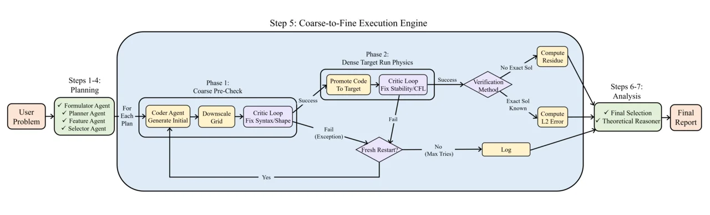

From a PDE prompt to plans, code, verification, theory, and the final solver choice.
AutoNumerics is a push button PDE lab. Give it a PDE problem in plain language. It launches an agent team that formulates the problem, designs schemes, writes solver code, debugs failures, verifies the answer, and selects the winner.
AutoNumerics builds classical numerical solvers that scientists can inspect, run, and improve. It bypasses the neural black box route and turns expert numerical analysis into an autonomous workflow.
The paper puts AutoNumerics in the same arena as neural solvers and CodePDE. AutoNumerics takes every CodePDE benchmark column and lands on a geometric mean of 9.00 × 10−9. The gap is large enough to put agent driven PDE solving in a new league.
nRMSE, lower is better. Missing baseline values are marked not reported.
| Method | Advection | Burgers | React Diff | CNS | Darcy | Geom. Mean |
|---|---|---|---|---|---|---|
| U Net | 5.00 × 10−2 | 2.20 × 10−1 | 6.00 × 10−3 | 3.60 × 10−1 | not reported | not reported |
| FNO | 7.70 × 10−3 | 7.80 × 10−3 | 1.40 × 10−3 | 9.50 × 10−2 | 9.80 × 10−3 | 9.52 × 10−3 |
| PINN | 7.80 × 10−3 | 8.50 × 10−1 | 8.00 × 10−2 | not reported | not reported | not reported |
| ORCA | 9.80 × 10−3 | 1.20 × 10−2 | 3.00 × 10−3 | 6.20 × 10−2 | not reported | not reported |
| PDEformer | 4.30 × 10−3 | 1.46 × 10−2 | not reported | not reported | not reported | not reported |
| UPS | 2.20 × 10−3 | 3.73 × 10−2 | 5.57 × 10−2 | 4.50 × 10−3 | not reported | not reported |
| CodePDE | 1.01 × 10−3 | 3.15 × 10−4 | 1.44 × 10−1 | 1.53 × 10−2 | 4.88 × 10−3 | 5.08 × 10−3 |
| Naive Central Difference | 7.05 × 1012 | 1.64 × 10−2 | 1.23 × 10−1 | 3.85 | 2.34 × 10−1 | not reported |
| AutoNumerics | 4.18 × 10−14 | 1.79 × 10−5 | 8.98 × 10−7 | 1.82 × 10−4 | 4.84 × 10−13 | 9.00 × 10−9 |
PDE solving is moving from hand-designed solvers to autonomous production. AutoNumerics does the heavy solver work in a loop of plan, code, test, verify, choose, and ship. That is the path from a research question to working scientific computation at AI speed.